Unorthodox Aphorisms
2011“Whenever people agree with me I always feel I must be wrong.” — Oscar Wilde
In Unorthodox Aphorisms I invite the viewers to distance themselves from their conventional routines. These photographs are visual aphorisms targeted at the conformism of individuals who live what is considered a normal life. They are about empathy and familiarizing ourselves with unconventional human behaviour. I question stereotypical gender behaviour by creating physical sensations using tactile objects and materials. Identifying the power relationships between showing, looking and being looked at, I encourage the viewers to take action against societal assimilation and prejudice.
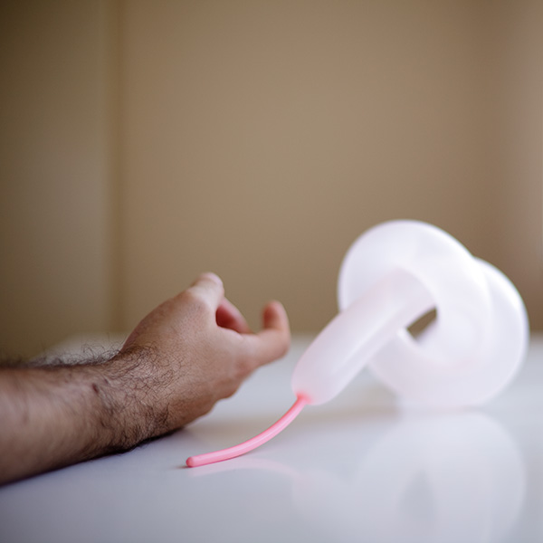
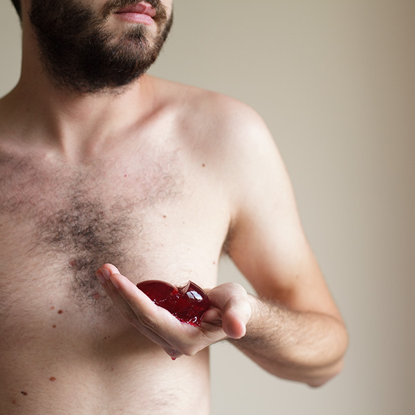
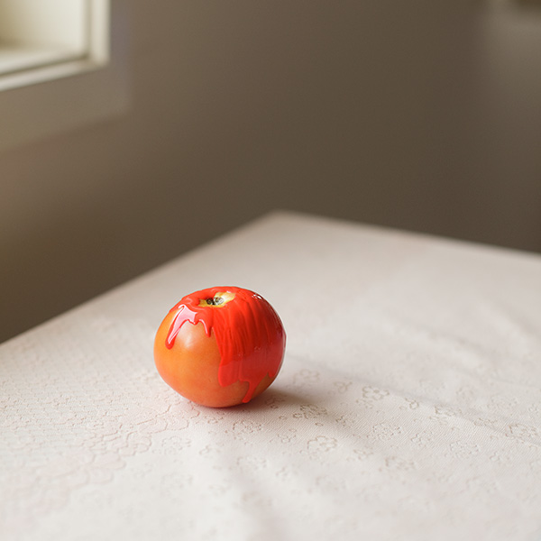
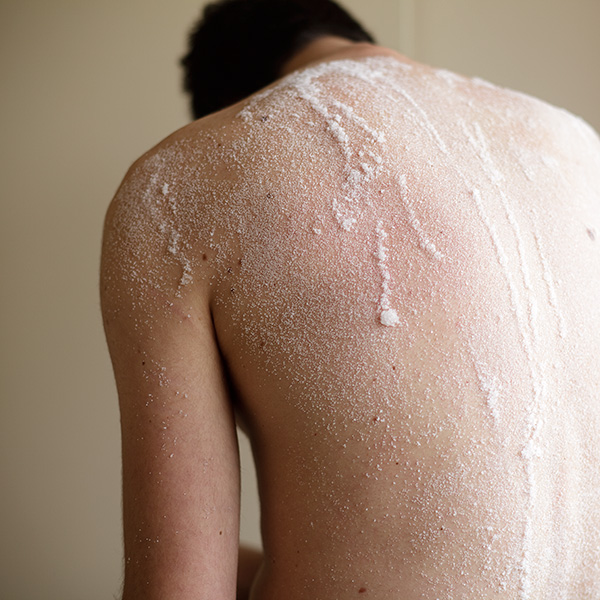
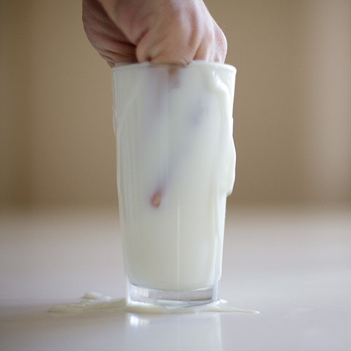
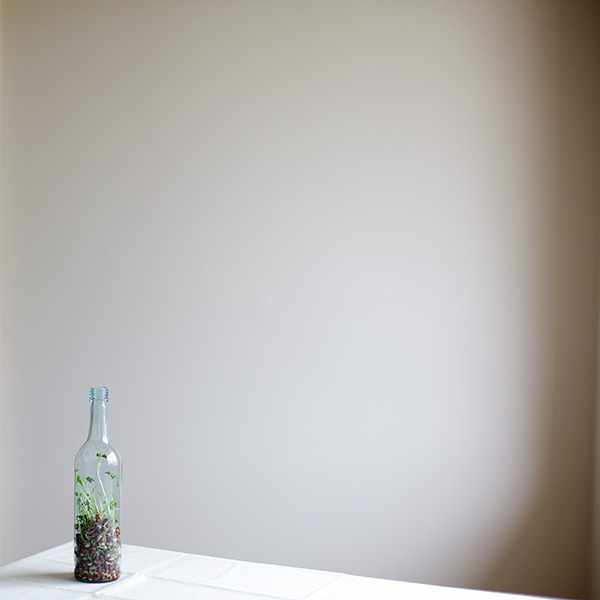
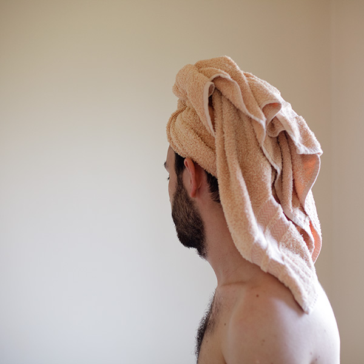
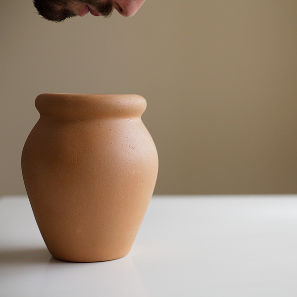
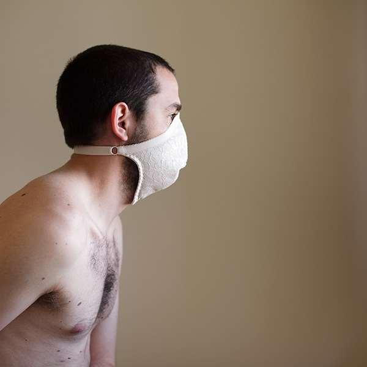
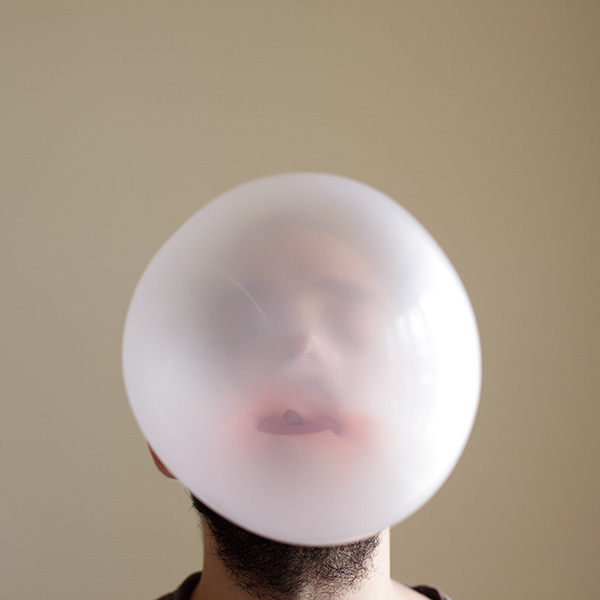
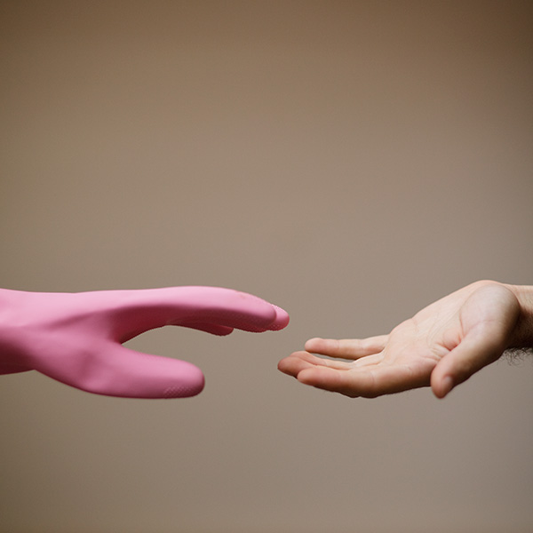
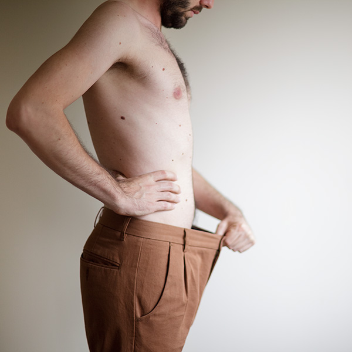
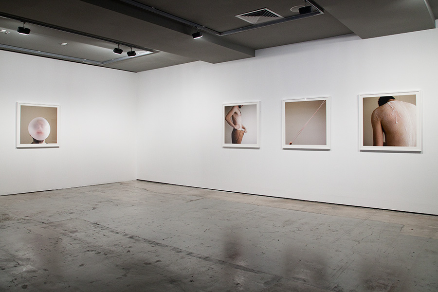
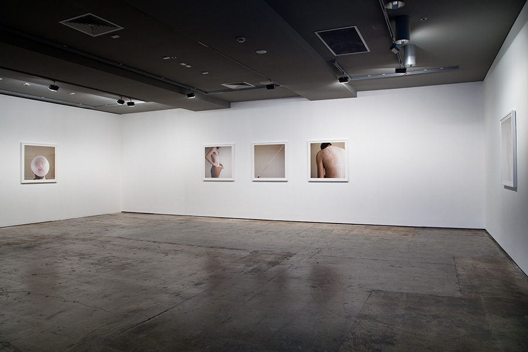
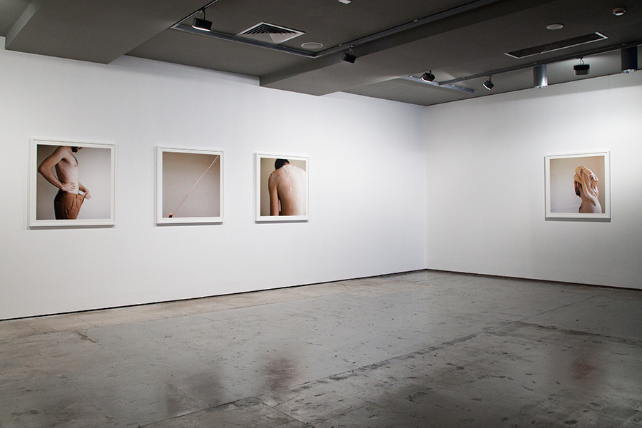
Fresh Cut, 2012
Institute of Modern Art, Brisbane
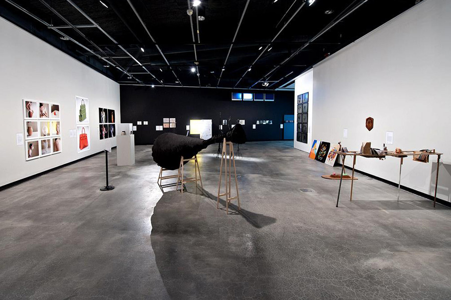
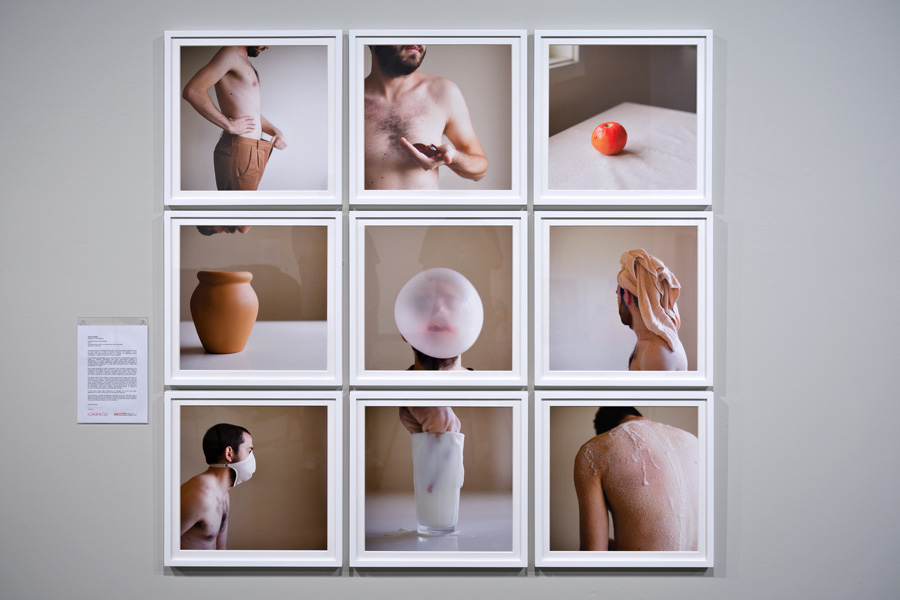
The GAS: Graduate Art Show, 2011–2012
Griffith University Art Gallery, Brisbane
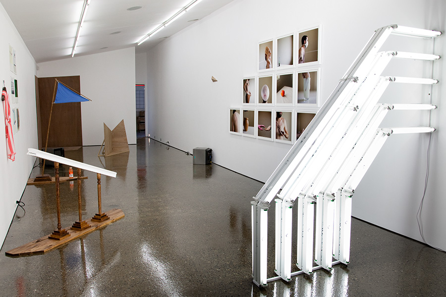
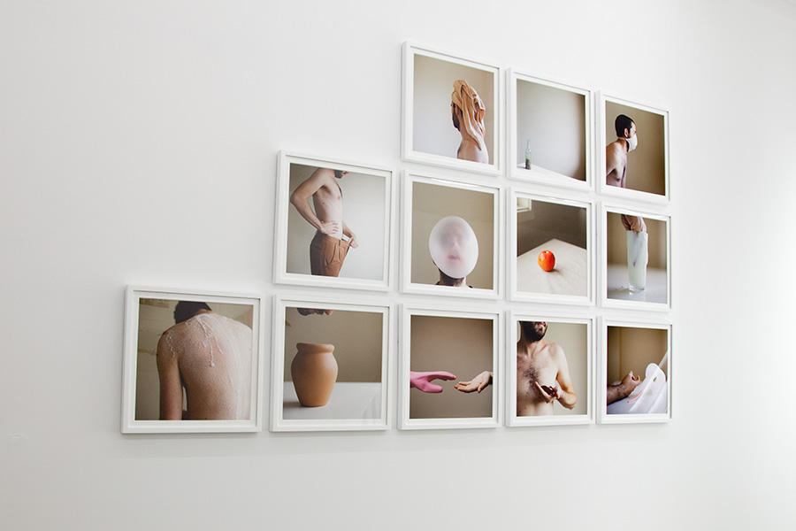
Test Pattern, 2012
Ryan Renshaw Gallery, Brisbane
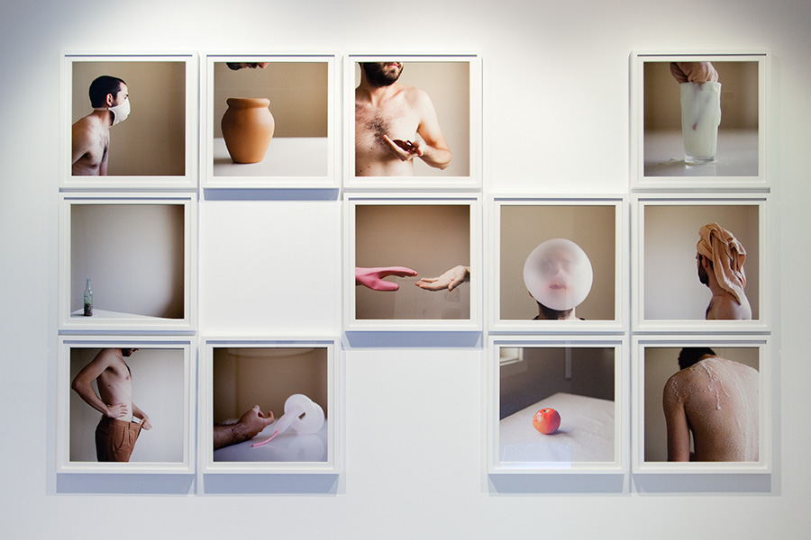
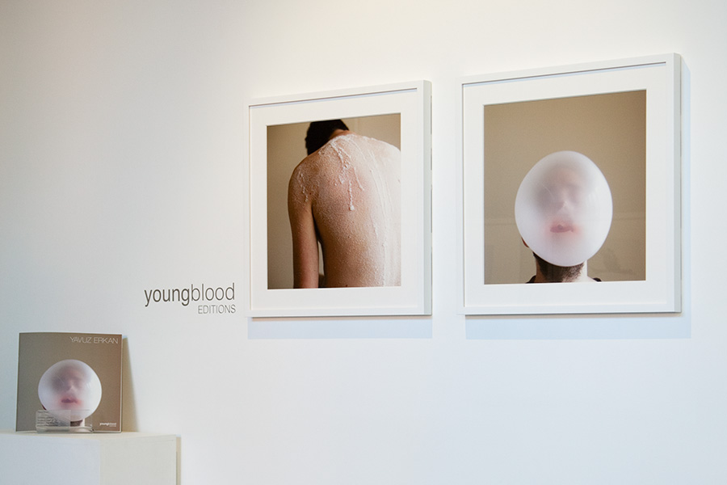
Youngblood Editions, 2012
Queensland Centre for Photography, Brisbane